- VVVV comments: true
Collections
Watch this https://www.youtube.com/watch?v=sg4469iiao8
Spreads
Look here for deeper information
Make own spread manually
To create a spread from only one value we can use the FromValue(Spread) node.
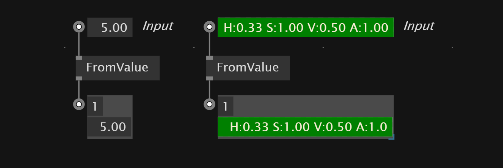
With the Repeat(Spread) node we can create a spread with multiple times the same value.
With Cons node we can collect multiple values in a spread. With CTRL +/- we can add and delete inputs.
We also can create a spread via the IOBox menu. You first select Spread and then the data type of the elements of the spread.
Make iteration spread
With I as Integer we can create a spread of integers in a given range.
Start defines first value and Count how many elements in the spread you want to have.
You need to activate the advanced nodes to see the I node.
Queue Slices into a Spread
Queue allows us to add slices into spread when a trigger input is true.
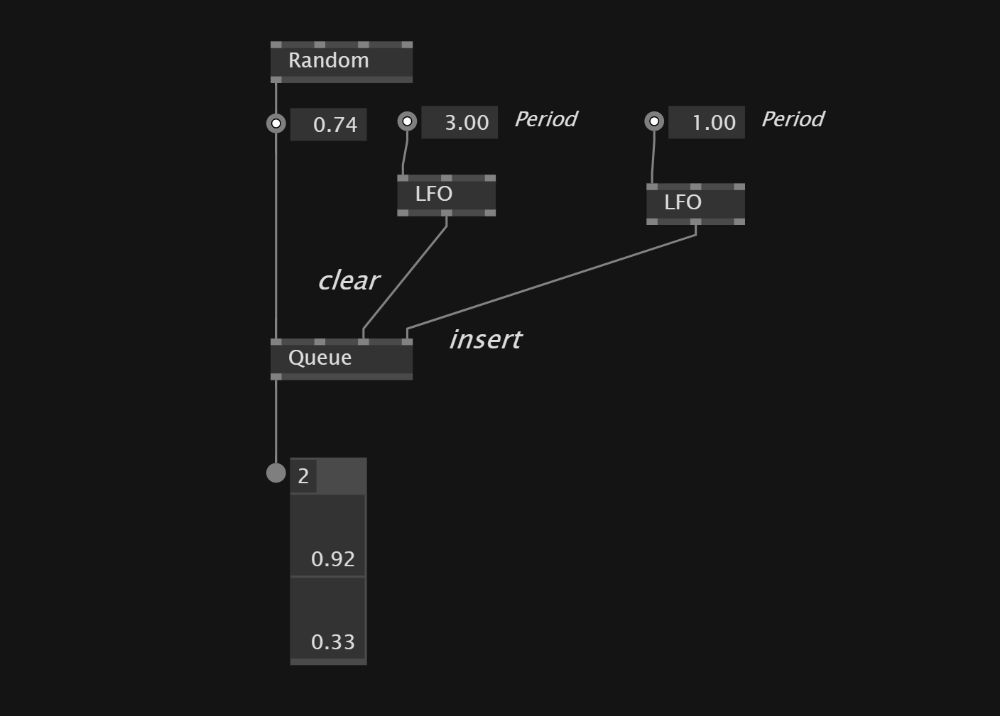
Frame Count imput defines how many values the Queue can contain.
If Frame Count input is -1 the Queue can contain endless values.
Automatic Spread generators
VL contains nodes that automatically generate spreads with values that are in a specific relation to each other.
One dimensional spreads
LinearSpread creates linear values within a range specified by the width and center input.
RandomSpread generates random values within a range, specified by width and center.
Two dimensional spreads
RectangleSpread - Generate rectangle position values.
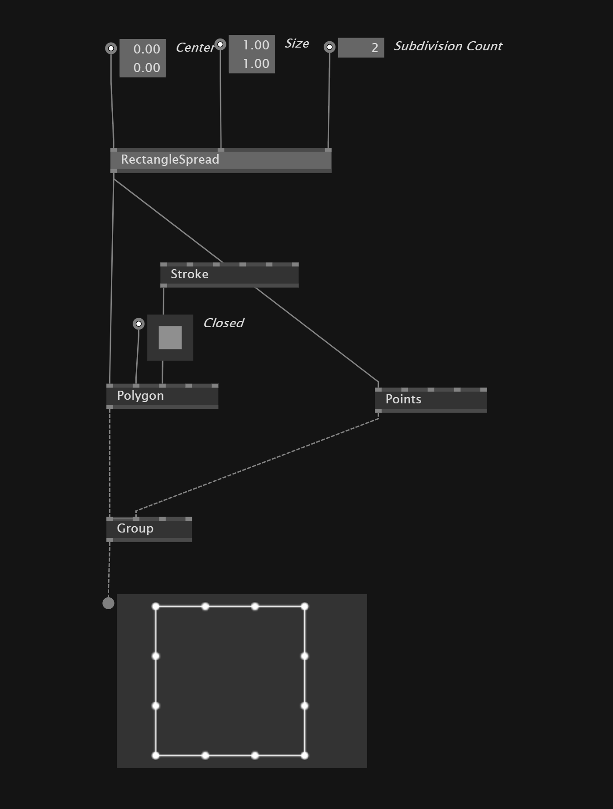
CircleSpread - Generate circle position values.
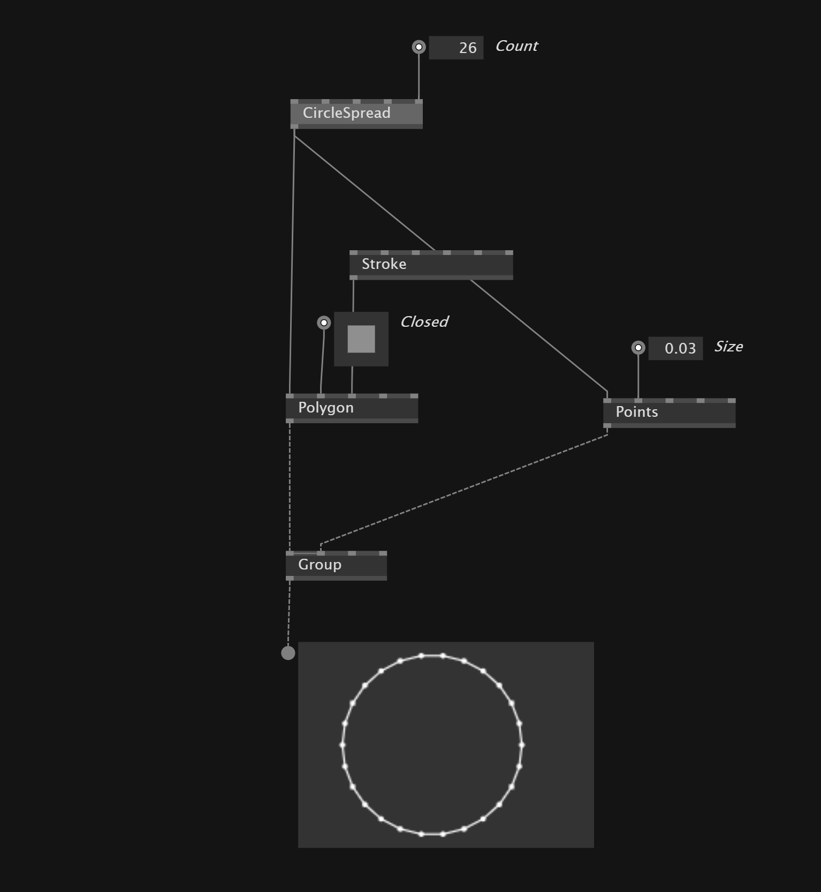
GridSpread - Generate 2D grid position values.
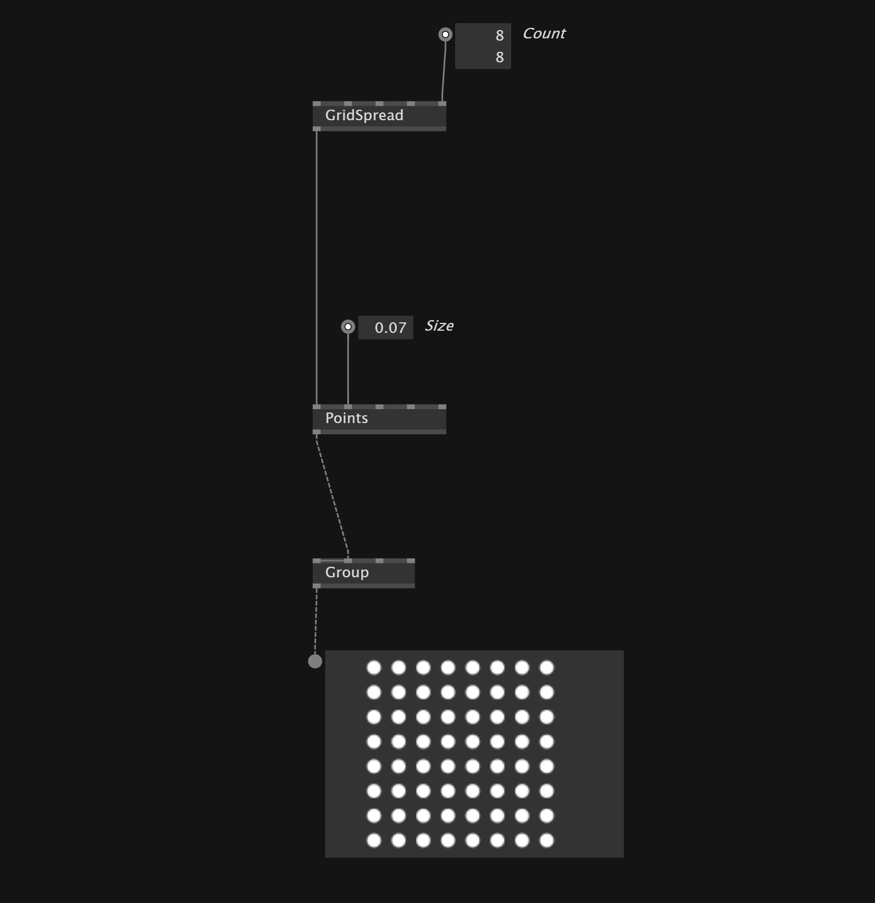
SpiralSpread - Generate spiral position values.
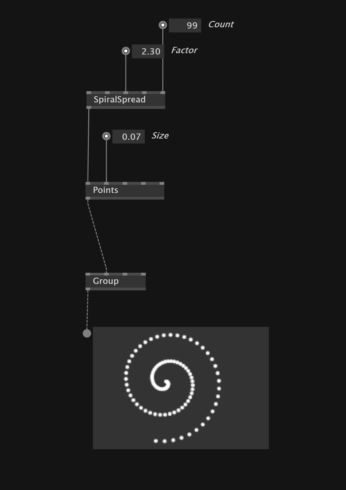
RandomSpread(2D) - Generate random position values.
Random morph between spread values
With a Randomizer node after a switch and then dampining the values in the ForEach we can create a morphing behaviour between the spread values.
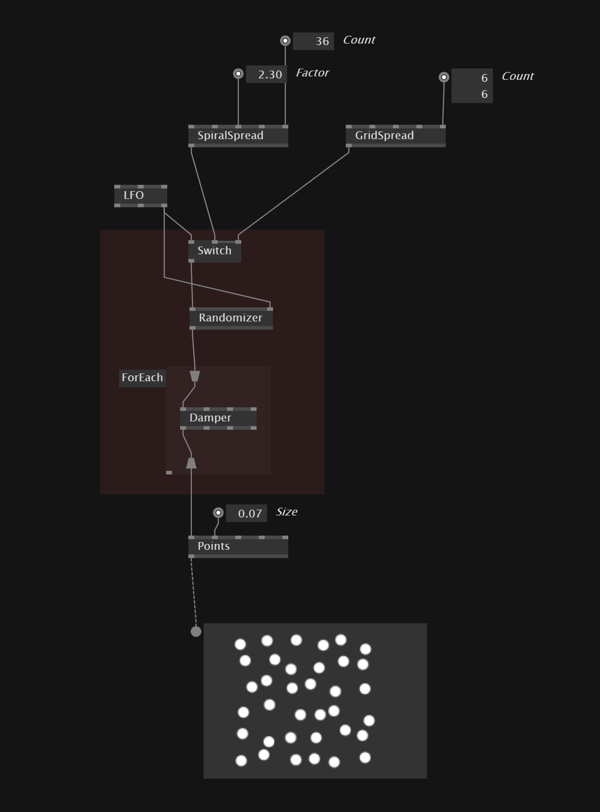
Three dimensional spreads
RandomSpread(3D) - Generate random position values in 3D space
GridSpread(3D) - Generate 3D grid position values.
To use 2D spreads in 3D space we need to add ForEach slice in the spread another dimension in the vector. So from 2D we need to go into a 3D vector. We can use a 3D Vector(Join) node and plug the values from the 2D in there.
Pick element of spread
To pick an element out of a spread we can use GetSlice and then set the index of the data point we want.
Get spread out of spread
To grab multiple consecutive elements from a spread we can use GetSpread.
Get multiple slices of spread
To extract multiple elements from a Spread we can use Decons node and expand the amount of values with +/-.
Get first/last slice of spread
With SplitFirst and SplitLast we can get the first or last slice in the spread.
Change values in Spread
To add a value at the end of the spread we can use Add(Spread) node.
To add a value at a specific position we use InsertSlice(Spread).
To change a value at a specific position use the SetSlice(Spread).
We can remove a slice at a specific position with RemoveSliceAt(Spread).
With Clear(Spread) we can remove all slices.
Split Spread into two spreads
With the SplitAt(Spread)node we can create two spreads out of one. Index defines where they get split.
Analyze spreads
To count the amount of slices in a spread we can use the Count(Spread) node.
To check if spread contains specific value we can use Contains(Spread) node. This returns a boolean value.
For the average value of a spread we can use Average node.
Change order of spreads
To change the order of a spread into a random order we can use the Randomizer node.
To reverse the order of the spread we use the Reverse(Spread)
Convert any sequence into spread
Because any collection in VL is a sequence we can convert any collection into a spread with FromSequence(Spread)
Combining Spreads with Pads
Storing our spreads in to Pads allow us to manipulate it's data over the runtime of our program.
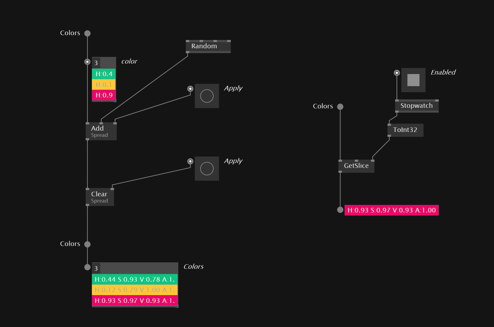
Deconstruct Spread into it's values
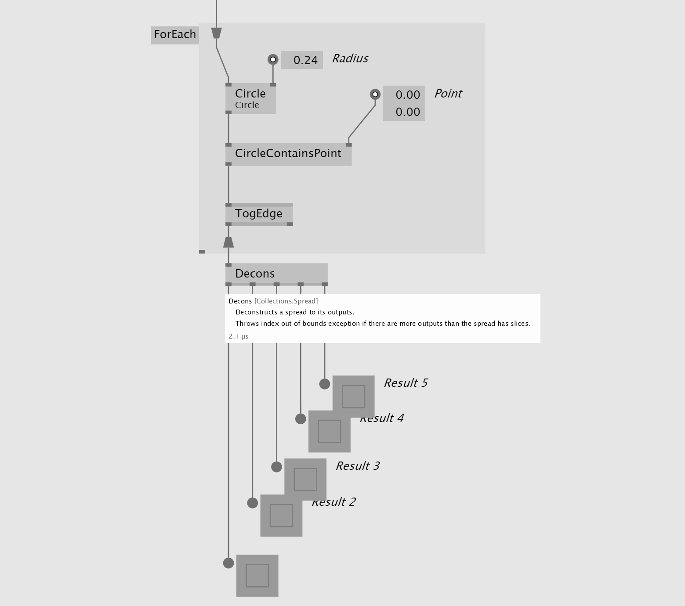
Resample Spread Values
We can resample a spread and make the transition between the values of the initial collection smoother. We can apply this if we for example want to create smoother path between points.How to draw path from spread
With ResampleBSpline we can define how many Resample steps we want.
Dictionaries
In Dictionaries the values are saved by a key. The key is most of a time a string and can only exist one time in the dictionary.
Similar to spreads we ether can define the adaptively by setting the data type in the Add(Dictionary) node or we strictly define the data type in the Pad that stores the Dictionary data.
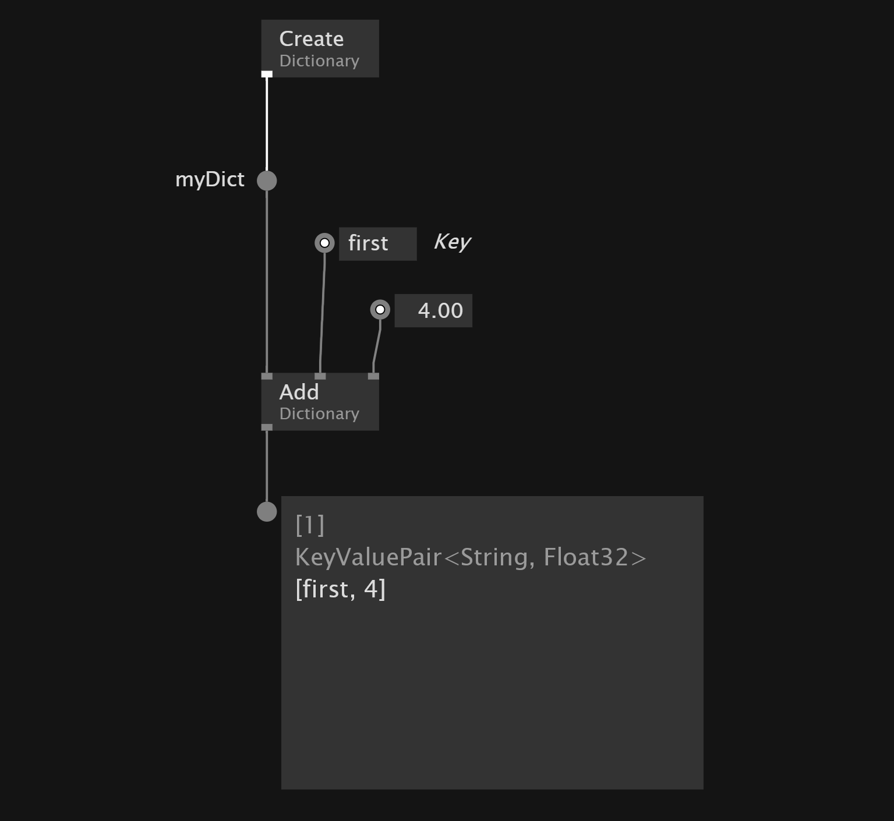
With Clear(Dictionary) we can delete all entries from the Dictionary.
To manipulate an already existing key-value pair we can use SetItem(Dictionary) node.
With Remove(Dictionary) we can delete a specific element by the key.
We also have Keys(Dictionary) and Values(Dictionary) nodes to only get the keys or values from a dictionary.
To check if a Dictionary contains keys or values we can use
ContainsKey, ContainsValue or Contains(Dictionary).
To get a value by it's get we can use the TryGetValue(Dictionary) node.
With Count(Dictionary) we can calculate the amount of entries in the Dictionary
Sequence
Iterations
For each
To iterate through all items in the spread, we need to use the splicer input into a ForEach region. It's icon looks like a filter.
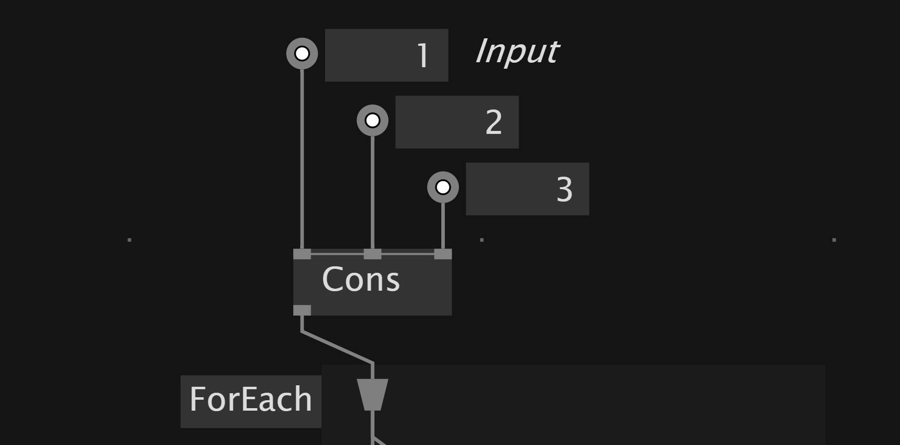
In the ForEach region we then can apply operations to each element individually.
If you pass in two spreads with different length in to the ForEach region it will only execute the amount of entries of the smaller spread.
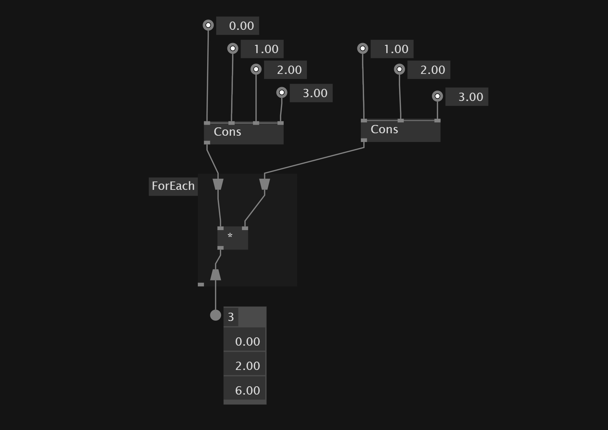
For also can create nested loops with multiple ForEach loops inside of each other.
To convert these nested spreads into a normal spread we have to use Flatten node.
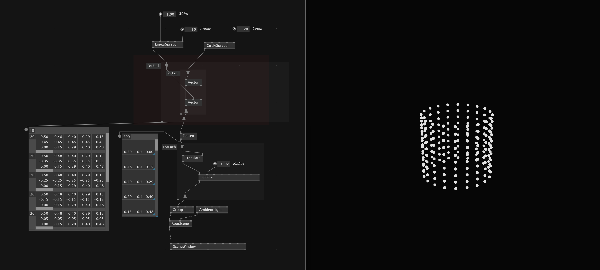
Repeat
The Repeat region repeats everything that is inside of the region for a specified amount of times.
Using Repeat with Process Node
We can use a Repeat with our own Process Node inside. If we want to create random start data for the content nn that Process Node we can take advantage of Create and Update operations to setup each Instance with different data.
Looping
ForEach and Repeat regions give us Index pin which allows us to use the Index of the current iteration to change values.
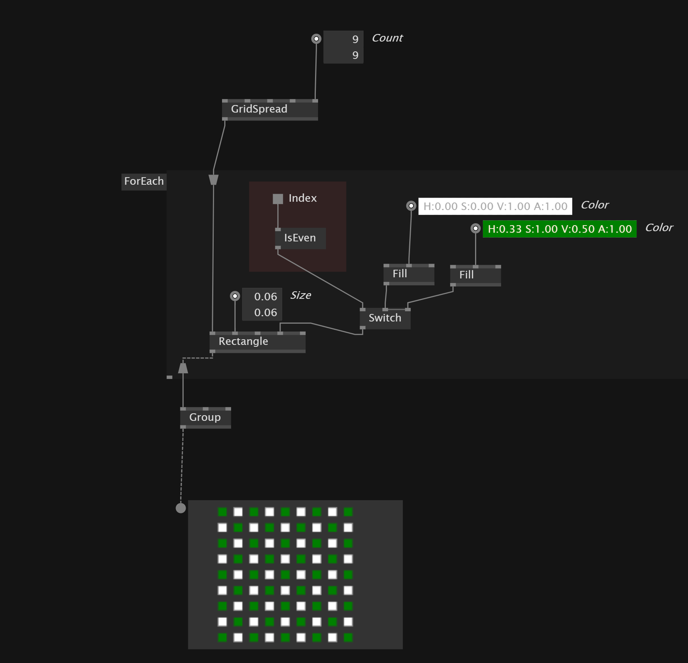
The Keep pin allows to only keep the elements that match a conditions with true value. So we can decide which elements should be included and which not.
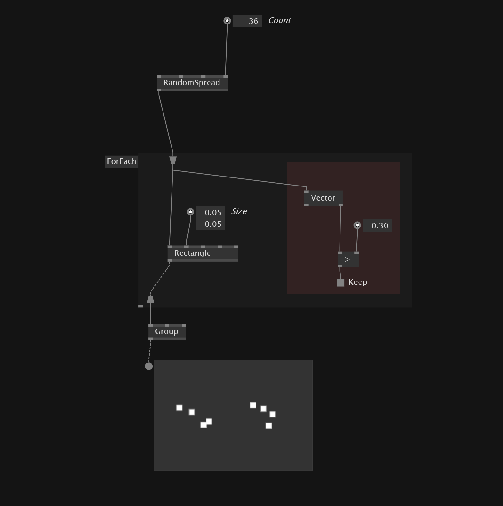
Accumulator
The accumulator allows you to to pass on the result from the first iteration to the next iteration and so on. 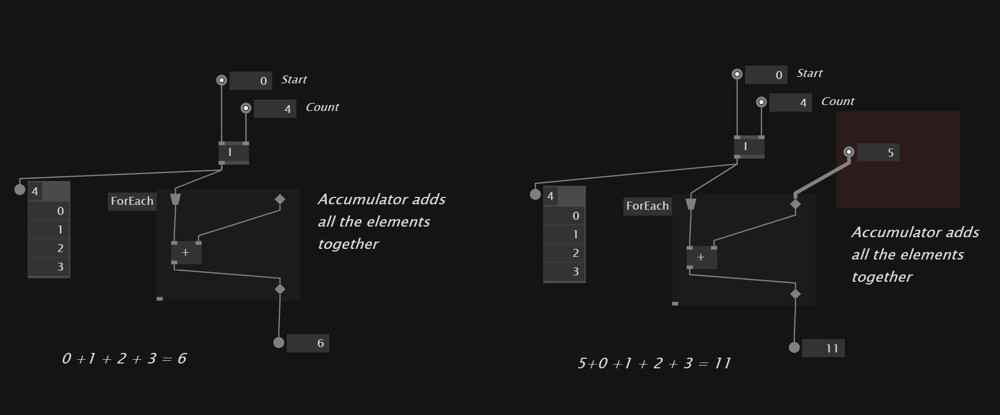 The link from the diamond shape is the value from the previous iteration and the link from splicer is the value in the current iteration.
We also can use an initial value for the first iteration. For that we need to plug a value from the outside into the accumulator icon.
Define what elements are kept in For-Each
We can use the Keep node inside the for-each to define which information we want to output from a spread.
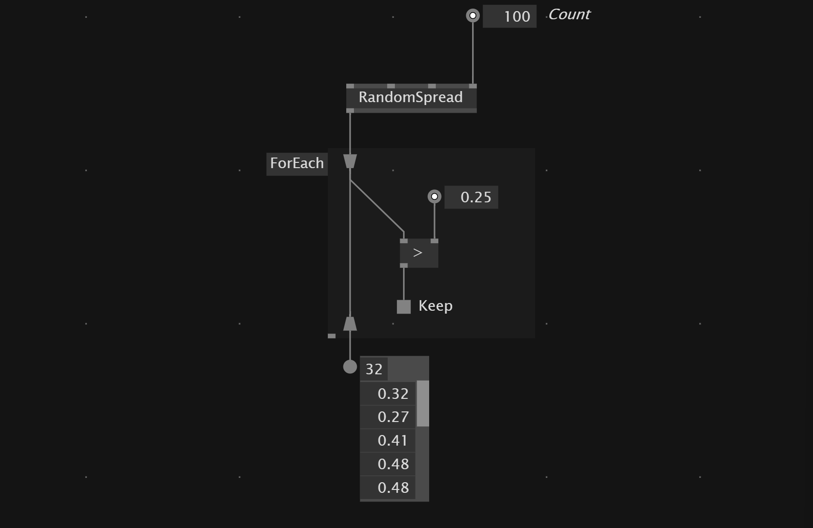